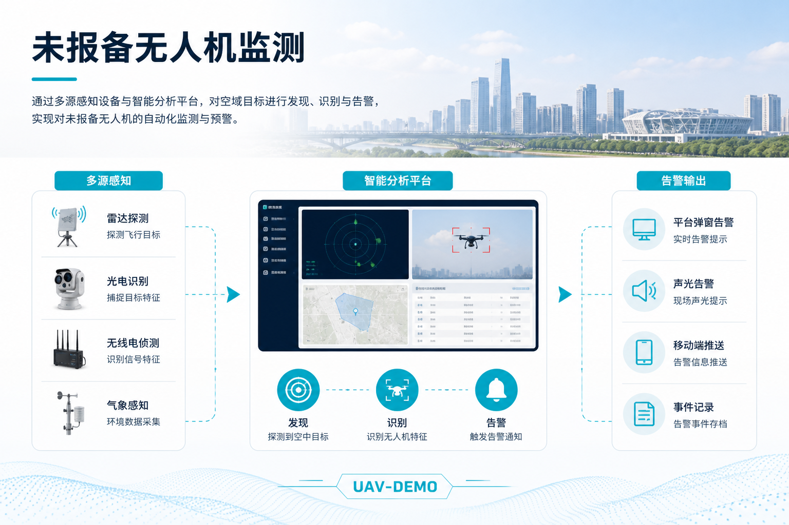
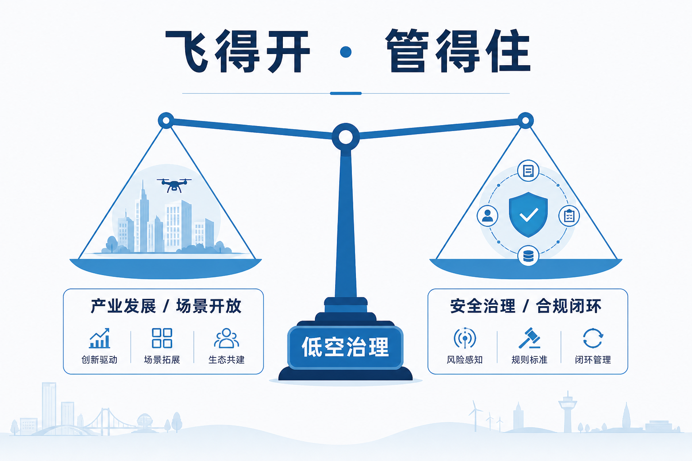
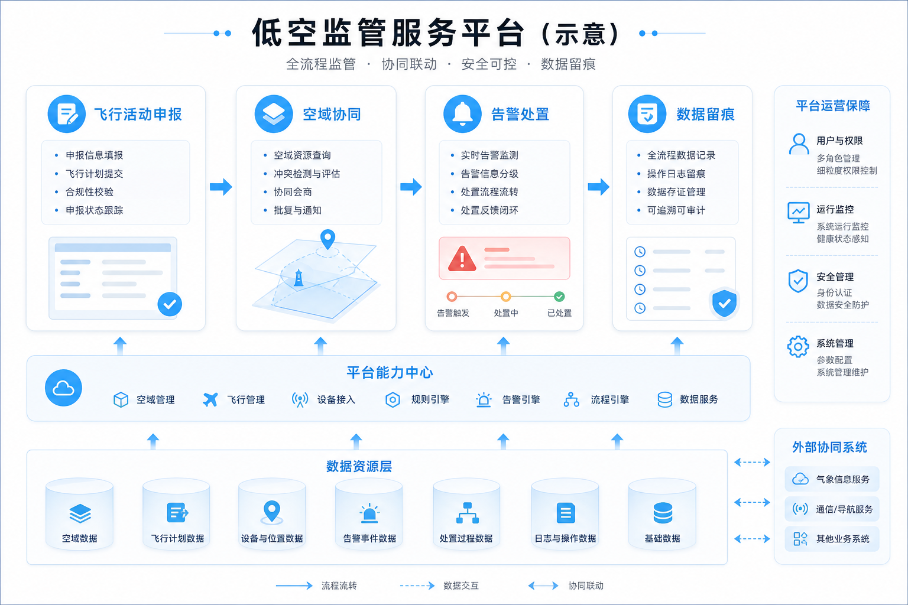

一边是田里的效率账单，一边是小区里的刺鼻气味。
据上观新闻「夏令行动」报道（2026年8月4日），上海松江、金山等区，紧邻稻田的居民反复遇到同一件事：无人机掠过田埂喷洒除草剂或农药，药味飘进楼道阳台，自留地蔬菜枯黄或生长停滞。农场主说要抢农时、看草情，没法每次提前挨家通知；居民说不是反对植保，是「飘过来」没人认账。截至2025年底，上海农用无人机保有量已近900台——新农具上量了，城乡接合部的摩擦也跟着上量。
低空经济宣传册里，植保无人机常被写成「降本增效」的样板。上海这组邻里冲突把问题写回地面：合作目标飞得再合规，如果作业边界只写到「能不能起飞」，不写「药雾能飘多远」，规则就会在田埂外失效。
900
上海公开口径（报道援引）：截至2025年底农用无人机保有量约数
冲突发生在居民区与田块贴邻地带
一 先把「遭殃」说清楚
报道里的个案并不抽象。松江洞泾镇，张女士反映小区旁稻田喷洒除草剂，气味飘入小区；叶榭镇毛先生的自留地蔬菜因农药漂移受损，曾获赔偿，但问题未从源头断掉；金山亭林镇施先生家田地受影响，作物枯死或生长缓慢。共同点是：无人机未必「黑飞」，作业往往发生在农时窗口，争议焦点不在「有没有登记」，而在漂移是否越界、越界后谁负责。
换个角度听农场侧。除草剂要看草情实时喷，窗口短、变化快，很难像城市航拍那样提前三天贴告示、走完一轮「邻里知情」。效率压力下，有人倾向「赔钱了事」：菜死了赔一笔，气味散了就算过关。赔偿能平一次纠纷，却养不成作业纪律——下一次微风、逆温，雾滴照样能走出约定的安全距离。居民看到的是「又来了」；农场看到的是「又赔了」。两边都累，规则却还站在田埂这一侧。
这不是上海独有的脾气。全国农用无人机早已规模化。民航局《2025年民航行业发展统计公报》显示，截至2025年底全行业注册无人机达328.7万架，比上年底增长51.0%；全年无人机飞行约4530.29万小时，同比增长近七成。国家发展改革委相关发布亦多次指出：农林作业等场景已较成熟，农用无人机保有与作业面积持续扩大。飞得越多，贴着居民区、工业区、道路的田块越多，规则若仍停在「起飞前查空域」，邻里摩擦就会从个案变成每个喷药季都要重吵一遍的季节性议题。
还有一层常被忽略：城乡接合部的空间形态本身就在制造冲突面。城市外扩，住宅贴着基本农田；田还在种，楼已经住满。人机协同的植保技术，撞上的是「田宅零距离」的规划现实。技术没有错，错在作业标准还按「大田连片、四周无人」的老画面来写。
对基层接诉的人来说，这类案子还特别「磨」：不像黑飞那样好定性，也不像邻里噪音那样好取证。气味散得快，菜叶药害要过几天才明显，无人机航迹若未强制留存，最后往往变成各执一词。上观把个案写出来，等于把这条灰色地带摊到台面上——继续假装只是「沟通不够」，标准就永远补不上。

贴田而居：飞得合规，不代表雾滴停在田里
二 规则管了什么，没管什么
报道把制度缺口写得很硬。
《上海市民用无人驾驶航空器飞行安全管理暂行办法》侧重的是：实名登记、操控人员取得相应操作资质、起飞前查询空域。这对遏制「黑飞扰航」很关键——谁在飞、有没有证、空域允不允许，是城市低空秩序的底线。没有这三道闸，任何「低空经济」都会先毁在扰航与失控上。但邻里冲突里，居民真正要的答案是另一句：今天这趟喷药，会不会飘到我家阳台和菜地？
地方标准《植保无人驾驶航空器安全作业技术要求》给出了部分敏感区域安全距离：河流、湖泊、池塘周围约50米；幼儿园、学校、医院等周围约200米；水源地、畜牧水产养殖区域等约500米。名单里有公共设施与水源，却没有明确「居民区附近」该留多少米，也未清楚界定「自留地」是否算敏感区域。基层现场常约定留出约5至6米——听起来像有规矩，却缺乏强制约束力；微风或逆温条件下，漂移范围可达数十米。5米是田埂上的默契，数十米是气象里的现实，两者不对齐，投诉就会反复来。
机制可以再剥一层。现有规则更擅长回答「这架机能不能合法升空」，不太擅长回答「合法升空之后，雾滴的责任边界在哪里」。前者是飞行管理逻辑，后者是农业投入品管理与相邻权逻辑。两套逻辑在田埂相遇，却没有共用一张作业单：喷什么药、风速多少、喷幅多宽、距最近住宅多少米、是否留痕可查。没有这张单，执法与调解只能在事后闻气味、看菜叶，成本高、举证难。
再往下问：谁来认定「漂移越界」？环保测气味、农业看药害、公安管黑飞、城管接投诉——条线一拆，居民就要学会「找对窗口」。规则碎片化时，最先累垮的是基层和当事人。上海这组案例之所以值得写进政策速递，不是因为它猎奇，而是因为它把多部门交界地带暴露出来了：飞的是无人驾驶航空器，伤的是相邻环境与作物，管的却可能是三本不同的手册。
还可以对照「黑飞」叙事看一眼。黑飞的痛点是未登记、未报备、闯入禁限飞区，执法入口相对清晰。植保漂移的痛点是：人有证、机有号、空域也许查过，雾滴却照样过界。若公共讨论只围着「打黑飞」转，城乡接合部的季节性投诉会被当成「邻里琐事」打发掉——直到投诉量把12345打满，标准修订才会被重新排上日程。把漂移写进政策视野，不是淡化黑飞治理，而是承认：低空秩序有两张面孔，一张管非法升空，一张管合法作业的外部效应。
对政策制定者，这意味着「飞行安全」与「作业安全」不能再分家写。前者管空域与资质，后者管雾滴、噪声、隐私与相邻影响。两份文件若各写各的，基层只能各找各的窗口；写成同一套可执行清单，投诉才会从「找对人」变成「按条款办」。上海个案把这个缝隙写实了，其他省市若还在扩农用机保有量，最好把缝补上再铺量。

管住起飞只是上半场；雾滴停在哪，才是下半场
三 效率与相邻：为什么「赔钱了事」治不好
植保无人机受欢迎，是因为它确实改写了农时。人背机器进田慢、不均匀，夏天曝晒风险高；无人机覆盖快，还能减少部分人工暴露。对农场主，农时就是钱；对居民，气味与菜地就是生活。两边都有道理，才特别需要可执行的边界，而不是道德劝谕或一次性红包。
报道里的专家建议指向补洞：修订标准，把居民区、自留地纳入分级距离条款；把执行情况与农场补贴等激励挂钩，逼作业方从源头控漂移，而不是习惯性赔款。这句话的治理含义很清楚——激励若只奖「飞得多、喷得快」，不奖「邻里零投诉、边界可核查」，上量之后一定换来更多纠纷。补贴是指挥棒：棒指着产量，作业就贴着田边飞；棒同时指着合规距离与投诉率，航线才会主动退开楼盘。
也可以换算成风险管理语言。5米约定，在静风、合适剂型、正确喷头时，也许勉强够用；一旦气象条件变差，漂移半径放大一个数量级，约定就变成废纸。把「停飞条件」写进作业规程——超过几级风、出现逆温层、住宅在下风向多少米内必须改期或改地面作业——比事后赔菜钱便宜得多。成熟行业的标志，是敢在窗口期喊停；只敢在出事后续费，说明标准还没进肌肉记忆。
现场还有一种常见妥协：加宽喷幅、加快航速、傍晚赶工。短时看能覆盖更多亩数，长时看却提高了雾滴细碎与漂移概率。效率指标若只看「今天喷了多少亩」，不看「下风向有没有人居」，作业员会被数字本身推着越线。把「邻里影响」写进班组考核，听起来琐碎，却比事后开会更管用。
再对照全国口径：农用场景已被官方多次点名为成熟应用。成熟应用的标志，不该只是保有量与亩次数，还应包括作业规范能否覆盖真实冲突面。上海近900台农用机，是效率成绩单；小区飘味与菜地受损，是成绩单背面的合规作业题。两边都写进同一张表，低空农业才站得住脚。对其他正在铺农用机的省市，上海不是特例预警，而是提前试卷：田宅贴得越近，这道题来得越早。

有作业单、能留痕，调解才不用靠闻气味
四 建设启示：合作目标也要管「边界与评估」
对城市治理与公安、农业农村条线读者，上海样本可对表的不是「禁飞农用机」，而是四件事。
第一，把「敏感区」写全。学校医院水源要管，贴田居民区与自留地同样会成为投诉高发带。距离条款要可测、可查，不能长期靠5米口头约定。写进地方标准或作业指引，比每个镇各说各话成本低。
第二，作业前多问一句气象与喷幅。风速、风向、剂型、喷头参数，决定漂移半径。没有条件单就起飞，等于把相邻权交给运气。有条件单，喊停才是专业动作，而不是「耽误农时」的借口战。
第三，留痕优于事后闻味。航迹、药液批次、作业时段、距离复核，能进平台或台账，调解才有依据。合作目标的「评」，不是可有可无的复盘，而是下一次少吵一架的前提。飞完即焚的作业方式，和黑飞一样难追责——只不过前者有证有牌。
第四，激励与处罚对齐。补贴、项目申报与合规记录挂钩，比单纯「赔钱了事」更能改变行为。飞得开，也要飞得对得起隔壁阳台。对屡次漂移、拒不改正的，该用的执法工具要用；对主动改线、改窗期、加缓冲带的，该有的正向激励要给到。
若落到可操作的「一张作业单」，不妨最少包含：药剂名称与登记号、预计起飞时段、风速风向阈值、距最近住宅/自留地距离、喷头与喷幅设定、驾驶员与责任主体、异常停飞记录。单子不必一次做成智能平台，纸质台账加抽查也能起步；关键是有据可查，而不是「飞完各说各话」。有了单，农业农村、应急、公安在接诉时才有共同语言，居民也不必在几个窗口之间来回跑。
城市低空常讨论非合作目标：黑飞、闯入、扰航。上海这组案例提醒另一面——合作目标、持证飞手、农时作业，照样能制造公共困扰。管住「谁在飞」只是上半场；管住「飞的影响落在哪」，才是城乡接合部必须补的下半场。业内说的「察 · 评」，放在这里很具体：察清航迹与气象条件，评估漂移是否越界，再决定能不能喷、怎么喷。不必先上复杂反制装备，先把作业边界写清楚、查得着，已经能消掉一大半季节性投诉。

合作目标也要察清条件、评估越界——边界写清楚，投诉才会少
五 判断：新农具要过邻里这一关
低空经济喜欢讲「场景落地」。植保无人机早已落地，落地之后却卡在田埂与围墙之间。900台机器证明技术跑通了；反复出现的气味与枯菜，证明规则还停在起飞口，没有跟到雾滴停下的地方。
飞得开，不等于飘得没人管
居民区旁留多少米、什么天气必须停、喷完能否追溯
新农具要过的，还有邻里这一关
低空经济要的是可持续场景，不是每个喷药季都刷一遍热搜的邻里大战。标准跟到雾滴，激励跟到投诉率，留痕跟到调解桌——这三步走完，900台农用机才算真正「飞稳」了，而不只是「飞多」了。
对订阅号读者，不妨留三句追问：本地植保距离条款有没有写到居民区？农场补贴有没有挂钩投诉与留痕？农时高峰时，哪个部门接得住「合法飞、不合法飘」的诉？答得清，规则才算跟到了雾滴停下的地方。
信息来源与出处
上观新闻「夏令行动」《“新农具”还是“新麻烦”？无人机进农田，居民为何频遭殃？》（2026-08-04，网易转载）／中国民航局《2025年民航行业发展统计公报》（2026-04-17）／报道转述：《上海市民用无人驾驶航空器飞行安全管理暂行办法》《植保无人驾驶航空器安全作业技术要求》相关要点
—— 关于我们 ——
羽嘉科技，城市级低空安全解决方案提供商，「猎场一号」警用低空防务智能实战平台研发者。
让低空管理从「被动应对」转向「主动防控」。
免责声明：本文相关信息引自公开渠道（信源见文中标注），仅供行业交流参考，不构成任何决策依据。如有侵权请联系删除。